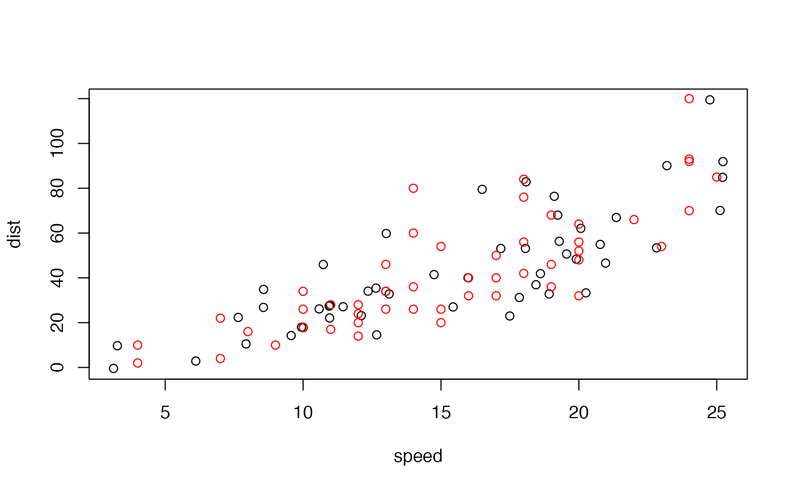

Produces very dissimilar datasets with the same statistical properties.
metamerize(data, preserve, minimize = NULL, change = colnames(data), signif = 2, N = 100, trim = N, annealing = TRUE, perturbation = 0.08, name = NULL, verbose = interactive())
| data | A |
|---|---|
| preserve | A function whose result must be kept exactly the same. Must take the data as argument and return a numeric vector. |
| minimize | An optional function to minimize in the process. Must take the data as argument and return a single numeric. |
| change | A character vector with the names of the columns that need to be changed. |
| signif | The number of significant digits of |
| N | Number of iterations. |
| trim | Max number of metamers to return. |
| annealing | Logical indicating whether to perform annealing. |
| perturbation | Numeric with the magnitude of the random perturbations.
Can be of length 1 or |
| name | Character for naming the metamers. |
| verbose | Logical indicating whether to show a progress bar. |
A metamer_list object (a list of data.frames).
It follows Matejka & Fitzmaurice (2017) method of constructing metamers.
Beginning from a starting dataset, it iteratively adds a small perturbation,
checks if preserve returns the same value (up to signif significant digits)
and if minimize has been lowered, and accepts the solution for the next
round. If annealing is TRUE, it also accepts solutions with bigger
minimize with an ever decreasing probability to help the algorithm avoid
local minimums.
If data is a metamer_list, the function will start the algorithm from the
last metamer of the list. Furthermore, if preserve and/or minimize
are missing, the previous functions will be carried over from the previous call.
minimize can be also a vector of functions. In that case, the process minimizes
the product of the functions applied to the data.
Matejka, J., & Fitzmaurice, G. (2017). Same Stats, Different Graphs. Proceedings of the 2017 CHI Conference on Human Factors in Computing Systems - CHI ’17, 1290–1294. https://doi.org/10.1145/3025453.3025912
delayed_with() for a convenient way of making functions suitable for
preserve, mean_dist_to() for a convenient way of minimizing the distance
to a known target in minimize, mean_self_proximity() for maximizing the
"self distance" to prevent data clumping.
data(cars) # Metamers of `cars` with the same mean speed and dist, and correlation # between the two. means_and_cor <- delayed_with(mean_speed = mean(speed), mean_dist = mean(dist), cor = cor(speed, dist)) set.seed(42) # for reproducibility. metamers <- metamerize(cars, preserve = means_and_cor, signif = 3, N = 1000) print(metamers)#> List of 257 metamerslast <- metamers[[length(metamers)]] # Confirm that the statistics are the same cbind(original = means_and_cor(cars), metamer = means_and_cor(last))#> original metamer #> mean_speed 15.4000000 15.4083841 #> mean_dist 42.9800000 42.9869770 #> cor 0.8068949 0.8074312